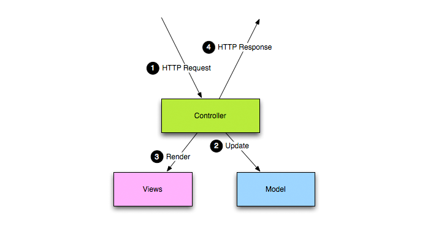

Intro
The Play! Framework was created by Guillaume Bort still working on Zenexity around 2007, but the first time that the framework was released was on October 2009. The framework was developed in order to provide a framework that allows building web applications with Java quickly and easily. The Play! provides focused tooling for producing REST-based software architecture, facilitating the development of agile. The framework is heavily inspired by Ruby on Rails and Django, allowing developers to use the power of the Java language in an environment free from the archaic structure of Java EE, significantly increasing productivity.
The Play! framework would not do if they do not bring any new features that improve production of developers compared to other Java frameworks for success. The following subsections present the main advantages to build applications based on Play.
Stateless
The framework is designed to work in such architecture called 'share nothing'. The idea behind the share is nothing is to build completely stateless applications, reducing each request to its own scope. This ability to work without maintaining any state allows the application to be easily scalable, allowing developers to run multiple instances on multiple servers.
MVC
The Play! was developed in order to enable the creation of applications that make use of MVC (Model-View -Controller). The MVC has as main feature separating the application's logic layer from the interface presented to the user. The Model is used to represent the information that the system operates. The Model also adds meaning to the data such as calculating birthday from date of birth. In the MVC architecture, the database layer is contained in the Model.
The user interface (View) renders the Model and allows interaction with the application users . Multiple interfaces can exist for a single Model. In the case of web applications , the user interface typically uses known technologies such as HTML , XML or JSON .
The control responds and processes events, triggering changes to the model. In web applications, for example, these events are typically HTTP requests that the control receives, extracts important data and applies the changes to the model.
Efficient execution
Using the Play!, developers can source code files, save them and reload the browser without the need to manually build, deploy or restart the server, which facilitates implementation and reduce development time, significantly increasing production.
For stable releases, the framework also has advantage as running , being able to generate files of type WAR , enabling applications based on the framework can run on widely used with the JBoss servers .
Efficient models
The Play has a system of templates for creating efficient graphical interfaces to generate HTML , XML , JSON , or any text-based document. These models are used with Groovy expression language and also has a tagging system that allows reuse of functions.
Integrated environment
The framework provides a number of accessories needed for creating web applications integrating Hibernate, OpenID, Memcached, localization and internationalization support beyond the possibility of integration with other plugins.
Presentation of problems
The framework presents the source code and the exact line when mistakes happen, facilitating fixing of bugs.
Using Play
The following video explains the basics of the Play! providing a small tutorial on the creation of apps using the framework.